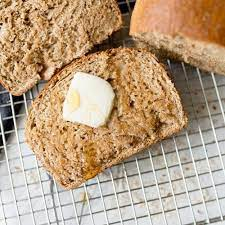

How To Make Honey Wheat Bread

Ingedients
Makes 1 large loaf
- 1 1/4 cups lukewarm water
- 1 tbsp dry yeast
- 2 1/4 cups white all purpose flour
- 1 cup whole wheat flour
- 1 1/4 tsp salt
- 1 tbsp sugar
- 2 tbsp oil
- 4 tbsp honey
Directions
- Mix sugar and honey in water until dissolved
- Mix yeast into sugar and water mixture until few clumps remain
- Cover yeast and sugar/water mixture with cloth and place somewhere warm until it foams several inches high
- Mix both flours together and stir
- Once Yeast and sugar-water mixture is ready add oil and gently pour into flour mix, stirring gently
- Keep stirring scraping the sides of your bowl until the mixed becomes a ball of dough
- Once ball of dough stops sticking to sides of your bowl cover and set some place warm until dough doubles in size
- Once dough doubles in size remove and place on floured surface and knead thoroughly by hand
- After kneading form a loaf and place in greased bread pan, cover and set in a warm place until loaf doubles in size
- After loaf has doubled in size heat your oven to 350 degrees F and place in oven
- Bake for 20 minutes or until the loaf makes a hollow sound when tapped with a untensil
- Remove from oven, cover top with butter and let cool
- Once cooled remove bread from pan, slice, and enjoy!!! *Goes great with a bowl of Hot Dog Soup